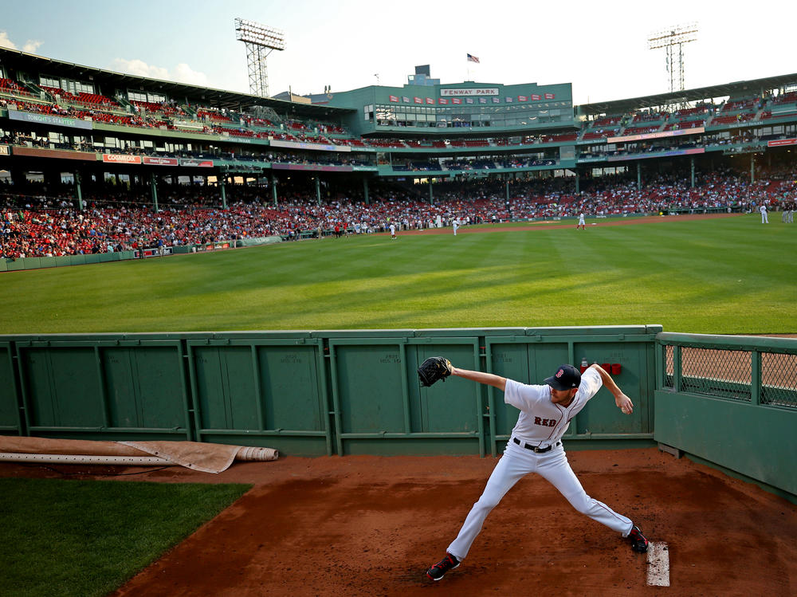

Use the Bullpen Better

The bullpen should not just be a place to throw until your arm feels warm. It should also be where you practice your routine, timing, and mental approach.
Bullpen Checklist
- Start easy and feel your rhythm.
- Focus on one mechanical cue.
- Practice breathing between pitches.
- Throw a few game-like sequences.
- Finish with confidence, not panic.
Game-Like Focus
During the last few pitches, pretend there is a hitter in the box. Pick locations and throw with intent.